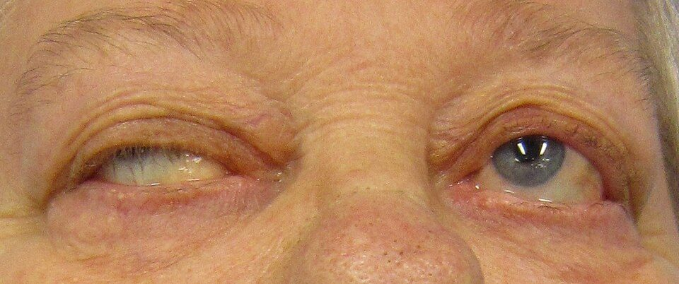

General information only. It does not replace advice from a health professional. For sudden neurological symptoms, call emergency services.


What it is
Myasthenia gravis is an autoimmune disease in which the immune system makes antibodies that block communication between nerves and muscles at the neuromuscular junction. The nerve releases acetylcholine, but the muscle's receptors are damaged or blocked, and the muscle responds less and less well. The result is muscle weakness that gets worse with effort and improves with rest.
It affects about 15-25 people per 100,000. It has two peaks: young women (20-40 years) and men over 60, in whom it is increasingly common.
Symptoms
- Drooping eyelids (ptosis), often on one side and varying through the day.
- Double vision, which appears or worsens when reading or driving.
- In the ocular form (15%) only the eyes are affected.
- In the generalised form: difficulty chewing, swallowing and speaking (nasal voice), a less expressive face, weakness of the neck, arms and legs (difficulty combing hair, climbing stairs).
- Symptoms fluctuate: they improve in the morning or after resting and worsen in the evening, with heat, infections or stress.
Myasthenic crisis
This is an emergency: weakness of the breathing or swallowing muscles requires admission to intensive care and sometimes mechanical ventilation. It can be triggered by infections, surgery or some medicines.
Causes
- Antibodies against the acetylcholine receptor: in 85% of generalised forms.
- Anti-MuSK or anti-LRP4 antibodies: in some of the rest.
- Thymus: about 10-15% of patients have a thymoma (a tumour of the thymus), and many young people have an enlarged (hyperplastic) thymus.
Diagnosis
- Antibody tests.
- Electromyography with repetitive nerve stimulation and single-fibre electromyography.
- Ice pack test: placing ice on the drooping eyelid for a few minutes improves it.
- Chest CT to look for a thymoma.
Treatment
- Pyridostigmine: increases the available acetylcholine and improves symptoms.
- Corticosteroids and immunosuppressants (azathioprine, mycophenolate), to control the disease in the long term.
- Thymectomy: removing the thymus improves the course of the generalised form with anti-receptor antibodies in people under 65 (MGTX study) and is required if there is a thymoma.
- New biological medicines: complement inhibitors (eculizumab, ravulizumab, zilucoplan) and FcRn receptor blockers (efgartigimod, rozanolixizumab), which clear the antibodies. Rituximab in the anti-MuSK form.
- Immunoglobulins or plasma exchange during crises and before surgery.
Medicines that can make it worse
Some medicines can aggravate myasthenia and should be used with caution: certain antibiotics (aminoglycosides, fluoroquinolones, macrolides), beta blockers, intravenous magnesium, some anaesthetics and muscle relaxants, chloroquine and the checkpoint inhibitors used in cancer. It is advisable to always carry a medical report and tell your doctor or dentist.
Living with myasthenia
With current treatment, most patients lead an almost normal life. It helps to plan tasks for times of greater energy, rest, avoid excessive heat and get vaccinated (avoiding live vaccines if taking immunosuppressants). Pregnancy is possible with close monitoring; some newborns have temporary weakness.
Sources
- Gilhus NE, et al. Myasthenia gravis. Nat Rev Dis Primers. 2019;5:30.
- Narayanaswami P, et al. International consensus guidance for management of myasthenia gravis: 2020 update. Neurology. 2021;96:114-22.
- Wolfe GI, et al. Randomized trial of thymectomy in myasthenia gravis (MGTX). N Engl J Med. 2016;375:511-22.
- Howard JF Jr, et al. Efgartigimod in generalised myasthenia gravis (ADAPT). Lancet Neurol. 2021;20:526-36.